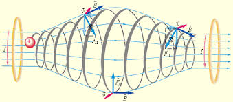

— силовое поле, действующее на движущиеся электрические заряды и на тела, обладающие магнитным моментом, независимо от состояния их движения; магнитная составляющая электромагнитного поля.
Магнитное поле может создаваться током заряженных частиц и/или магнитными моментами электронов в атомах (и магнитными моментами других частиц, что обычно проявляется в существенно меньшей степени) (постоянные магниты).
Основной силовой характеристикой магнитного поля является вектор магнитной индукции (вектор индукции магнитного поля) С математической точки зрения ) — векторное поле, определяющее и конкретизирующее физическое понятие магнитного поля. Нередко вектор магнитной индукции называется для краткости просто магнитным полем (хотя, наверное, это не самое строгое употребление термина).

Источники магнитного поля
Магнитное поле создаётся (порождается) током заряженных частиц, или изменяющимся во времени электрическим полем, или собственными магнитными моментами частиц (последние для единообразия картины могут быть формальным образом сведены к электрическим токам).